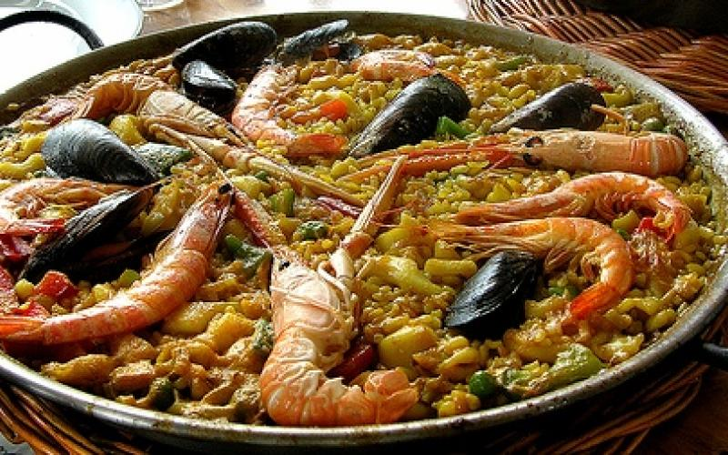

PAELLA VALENCIANA

Ingredientes:
400g de arroz bomba
1 pollo troceado
200g de conejo
200g de judía verde
1 tomate maduro
Azafrán o colorante alimentario
Aceite de oliva y sal
Pasos para la elaboración:
Calentar aceite en la paellera
Dorar la carne por ambos lados
Añadir las judías verdes y sofreír
Incorporar el tomate rallado
Añadir el arroz y mezclar bien
Verter el caldo caliente
Añadir el azafrán y rectificar de sal
Cocinar a fuego fuerte durante 10 minutos
Reducir el fuego y cocinar 8 minutos más
Dejar reposar 5 minutos antes de servir
Descargar receta en PDF:
Descargar Receta de Paella Valenciana
Volver al Menú Principal